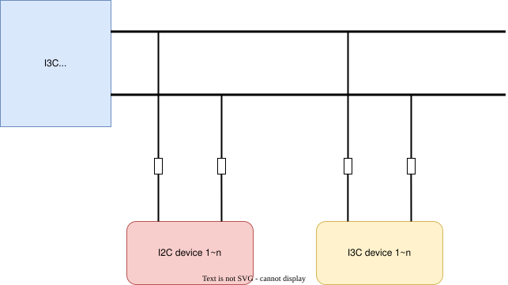
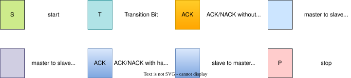

I3C master interface
This document introduces the I3C master driver functionality of ESP-IDF. The table of contents is as follows:
Overview
I3C is a serial synchronous half-duplex communication protocol and an enhanced version of the I2C protocol. While maintaining most compatibility with I2C, I3C provides higher speed, lower power consumption, and richer features.
For hardware-related information about I3C, please refer to the I3C Technical Reference Manual.
The main features of the I3C protocol include:
Backward compatibility with I2C: I3C bus can support both I2C and I3C devices simultaneously
Higher speed: I3C can reach up to 12.5 MHz, while I2C can reach up to 1 MHz
Static address assignment: Manually assign dynamic addresses based on static addresses through the SETDASA procedure
Dynamic address assignment: Automatically assign dynamic addresses through the ENTDAA procedure to avoid address conflicts
In-band interrupt (IBI): Supports slave devices sending interrupt requests through the I3C bus without additional interrupt lines
Common Command Code (CCC): Supports broadcast and direct CCC commands for bus management and device configuration
Important
When using with I2C devices, ensure that I2C devices mounted on the I3C bus must not support or enable clock stretching, otherwise when I2C slaves stretch the clock, it will cause the hardware state machine to hang.
The I3C frequency depends on circuit design and timing adjustment. Please refer to the I3C device manual you are using.
Some I3C slave devices have strict timing requirements for their acknowledgment mechanism (ACK/NACK). Please refer to the I3C slave device manual you are using.
Quick Start
This section will quickly guide you through using the I3C master driver. It demonstrates how to create a bus, add devices, and perform data transfers. The general usage flow is as follows:

General usage flow of I3C driver (click image to view full size)
Create I3C Bus
The I3C master bus is represented by i3c_master_bus_handle_t in the driver. The driver internally maintains a resource pool that can manage multiple buses and allocates free bus ports when requested.

I3C Bus Structure
When creating an I3C bus instance, we need to configure GPIO pins, clock source, frequency, and other parameters through i3c_master_bus_config_t. These parameters will determine how the bus operates. The following code shows how to create a basic I3C bus:
#include "driver/i3c_master.h"
i3c_master_bus_config_t i3c_mst_config = {
.sda_io_num = I3C_MASTER_SDA_IO, // GPIO number for SDA signal line
.scl_io_num = I3C_MASTER_SCL_IO, // GPIO number for SCL signal line
.i3c_scl_freq_hz_od = 600 * 1000, // SCL clock frequency in Open-Drain mode, please refer to device manual for appropriate values
.i3c_scl_freq_hz_pp = 2 * 1000 * 1000, // SCL clock frequency in Push-Pull mode, please refer to device manual for appropriate values
.i3c_sda_od_hold_time_ns = 25, // Hold time of SDA after SCL falling edge in Open-Drain mode (nanoseconds), recommended to set to 25, please refer to device manual for appropriate values
.i3c_sda_pp_hold_time_ns = 0, // Hold time of SDA after SCL falling edge in Push-Pull mode (nanoseconds), default is 0, please refer to device manual for appropriate values
.entdaa_device_num = 0, // Maximum number of devices allowed to be dynamically discovered through ENTDAA, range from [0x0, 0x7F], 0x0 means dynamic device discovery is not used
};
i3c_master_bus_handle_t bus_handle;
ESP_ERROR_CHECK(i3c_new_master_bus(&i3c_mst_config, &bus_handle));
Note
The I3C protocol requires automatic switching between open-drain and push-pull modes during each transfer between the addressing phase and data transfer phase. On ESP32-P4, only GPIO32/GPIO33 support automatic opening/closing of internal pull-up switches and support user adjustment of internal pull-up resistance values. When using other GPIOs, the internal pull-up may be insufficient, and it is recommended to add external pull-up resistors. However, in push-pull mode, this pull-up cannot be canceled, which may increase additional power consumption.
Add and Drive Legacy I2C Devices
Write to legacy I2C device
Read from legacy I2C device
The I3C bus supports compatibility with legacy I2C devices. If you need to connect a legacy I2C device (such as EEPROM, sensors, etc.) to the I3C bus, please note that I2C slaves must not perform clock stretching during I3C communication. The specific process can be done as follows:
// 1. Create I3C bus (refer to the code above)
i3c_master_bus_handle_t bus_handle;
ESP_ERROR_CHECK(i3c_new_master_bus(&i3c_mst_config, &bus_handle));
// 2. Add I2C device
i3c_device_i2c_config_t i2c_dev_cfg = {
.device_address = 0x50, // 7-bit address of I2C device
.scl_freq_hz = 100 * 1000, // Clock frequency of I2C device (100 kHz)
};
i3c_master_i2c_device_handle_t i2c_dev_handle;
ESP_ERROR_CHECK(i3c_master_bus_add_i2c_device(bus_handle, &i2c_dev_cfg, &i2c_dev_handle));
// 3. Write data to I2C device
uint8_t write_data[10] = {0x01, 0x02, 0x03, 0x04, 0x05, 0x06, 0x07, 0x08, 0x09, 0x0A};
ESP_ERROR_CHECK(i3c_master_i2c_device_transmit(i2c_dev_handle, write_data, sizeof(write_data), -1)); // -1 means infinite timeout
// 4. Read data from I2C device
uint8_t read_data[10] = {0};
ESP_ERROR_CHECK(i3c_master_i2c_device_receive(i2c_dev_handle, read_data, sizeof(read_data), -1));
// 5. Write-read combined transaction (write register address first, then read data, no STOP in between)
uint8_t reg_addr = 0x00;
uint8_t read_buffer[5] = {0};
ESP_ERROR_CHECK(i3c_master_i2c_device_transmit_receive(i2c_dev_handle, ®_addr, 1, read_buffer, sizeof(read_buffer), -1));
// 6. Clean up resources
ESP_ERROR_CHECK(i3c_master_bus_rm_i2c_device(i2c_dev_handle));
ESP_ERROR_CHECK(i3c_del_master_bus(bus_handle));
In this scenario, we:
Created an I3C bus instance through
i3c_new_master_bus()Added an I2C device through
i3c_master_bus_add_i2c_device(), which requires specifying the device's static address and clock frequencyUsed
i3c_master_i2c_device_transmit()to write data. By default, it works in blocking mode. For non-blocking mode, please refer to DMA and Asynchronous Transfer. The same applies to other transfer functions.Used
i3c_master_i2c_device_receive()to read dataUsed
i3c_master_i2c_device_transmit_receive()to execute write-read combined transactions (commonly used to write register address first, then read data, with no STOP bit in between)Finally cleaned up resources
Add and Drive I3C Devices via SETDASA
For specific behaviors that may occur during I3C transfers, please refer to the standard I3C protocol. The following diagram is used to briefly explain the behavior in I3C transfers to understand the I3C transfer diagrams in this document:

I3C Transfer Legend
If you know the static address of an I3C device, you can add the device using the SETDASA method:
I3C Directed Dynamic Address Assignment
// 1. Create I3C bus
i3c_master_bus_handle_t bus_handle;
ESP_ERROR_CHECK(i3c_new_master_bus(&i3c_mst_config, &bus_handle));
// 2. Add I3C device (using SETDASA)
i3c_device_i3c_config_t i3c_dev_cfg = {
.dynamic_addr = 0x08, // Dynamic address assigned to the device, can be any value except reserved addresses in the I3C protocol, or can be obtained through `i3c_master_get_valid_address_slot` to get an available dynamic address
.static_addr = 0x74, // Static address of the device (obtained from device manual)
};
i3c_master_i3c_device_handle_t i3c_dev_handle;
ESP_ERROR_CHECK(i3c_master_bus_add_i3c_static_device(bus_handle, &i3c_dev_cfg, &i3c_dev_handle));
// 3. Write data to I3C device
uint8_t write_data[100] = {0};
ESP_ERROR_CHECK(i3c_master_i3c_device_transmit(i3c_dev_handle, write_data, sizeof(write_data), -1));
// 4. Read data from I3C device
uint8_t read_data[100] = {0};
ESP_ERROR_CHECK(i3c_master_i3c_device_receive(i3c_dev_handle, read_data, sizeof(read_data), -1));
// 5. Write-read combined transaction
uint8_t reg_addr = 0x12;
uint8_t read_buffer[10] = {0};
ESP_ERROR_CHECK(i3c_master_i3c_device_transmit_receive(i3c_dev_handle, ®_addr, 1, read_buffer, sizeof(read_buffer), -1));
// 6. Clean up resources
ESP_ERROR_CHECK(i3c_master_bus_rm_i3c_device(i3c_dev_handle));
ESP_ERROR_CHECK(i3c_del_master_bus(bus_handle));
In this scenario:
We use
i3c_master_bus_add_i3c_static_device()to add an I3C deviceWe need to provide the device's static address (obtained from device manual) and the dynamic address to be assigned
The driver automatically executes the SETDASA procedure to assign the dynamic address to the device. If there is an address conflict, it will return
ESP_ERR_INVALID_STATE.After that, we can use the dynamic address for data transfers through
i3c_master_i3c_device_transmit()ori3c_master_i3c_device_receive()ori3c_master_i3c_device_transmit_receive(). By default, it works in blocking mode. For non-blocking mode, please refer to DMA and Asynchronous Transfer. The same applies to other transfer functions.Finally clean up resources
Add and Drive I3C Devices via ENTDAA
If you don't know which I3C devices are on the bus, or want the system to automatically discover and assign addresses, you can use the ENTDAA method:
I3C Automatic Dynamic Address Assignment
// 1. Create I3C bus (need to set entdaa_device_num)
i3c_master_bus_config_t i3c_mst_config = {
// ... other configurations ...
.entdaa_device_num = 5, // Maximum number of devices that can be dynamically discovered by the driver
};
i3c_master_bus_handle_t bus_handle;
ESP_ERROR_CHECK(i3c_new_master_bus(&i3c_mst_config, &bus_handle));
// 2. Scan I3C devices on the bus
i3c_master_i3c_device_table_handle_t table_handle = NULL;
ESP_ERROR_CHECK(i3c_master_scan_devices_by_entdaa(bus_handle, &table_handle));
// 3. Get the number of discovered devices
size_t device_count = 0;
ESP_ERROR_CHECK(i3c_master_get_device_count(table_handle, &device_count));
printf("Found %zu I3C devices\n", device_count);
// 4. Iterate through all devices and get device information
i3c_master_i3c_device_handle_t dev = NULL;
for (size_t i = 0; i < device_count; i++) {
i3c_master_i3c_device_handle_t dev_handle = NULL;
ESP_ERROR_CHECK(i3c_master_get_device_handle(table_handle, i, &dev_handle));
// Get device information
i3c_device_information_t info;
ESP_ERROR_CHECK(i3c_master_i3c_device_get_info(dev_handle, &info));
printf("Device %d: Dynamic Addr=0x%02X, BCR=0x%02X, DCR=0x%02X, PID=0x%016llX\n",
i, info.dynamic_addr, info.bcr, info.dcr, info.pid);
if (info.pid == /* Device PID, obtained from device manual */) {
dev = dev_handle;
break;
}
}
// Release device handle table, call when no longer needed
ESP_ERROR_CHECK(i3c_master_free_device_handle_table(table_handle));
// 5. Perform data transfer through transmit or receive
ESP_ERROR_CHECK(i3c_master_i3c_device_transmit(dev, data, sizeof(data), -1));
ESP_ERROR_CHECK(i3c_master_i3c_device_receive(dev, data, sizeof(data), -1));
In this scenario:
When creating the bus, we need to set entdaa_device_num, which represents the expected number of devices to be discovered
Use
i3c_master_scan_devices_by_entdaa()to scan all I3C devices on the busThe system automatically assigns dynamic addresses to each device
We can get the device count through
i3c_master_get_device_count()Get each device's handle through
i3c_master_get_device_handle()Use
i3c_master_i3c_device_get_info()to get detailed device information (dynamic address, BCR, DCR, PID)Perform data transfers through
i3c_master_i3c_device_transmit()ori3c_master_i3c_device_receive()based on the obtained device information
Note
i3c_master_scan_devices_by_entdaa() is thread-safe, and there will not be two threads addressing simultaneously. According to the protocol, when a slave is addressed and discovered by i3c_master_scan_devices_by_entdaa(), it no longer has the ability to respond to a second addressing. Therefore, there will be no address changes due to addressing in different threads. This interface supports adding new devices after initialization. To rescan, use the CCC mechanism to reset addresses on the I3C bus, or clear address information on the bus by power cycling.
Common Command Code (CCC) Transfer
The I3C protocol uses Common Command Code (CCC) for bus management and device configuration. You can use the i3c_master_transfer_ccc() function to send CCC commands.
CCC transfers can be broadcast (sent to all devices) or direct (sent to a specific device):
I3C Broadcast Command
I3C Direct Command
// Broadcast CCC command example: Send RSTDAA (Reset All Dynamic Addresses)
i3c_master_ccc_transfer_config_t ccc_trans = {
.ccc_command = I3C_CCC_RSTDAA,
.direction = I3C_MASTER_TRANSFER_DIRECTION_WRITE,
.device_address = 0, // Broadcast command, this field is ignored
.data = NULL,
.data_size = 0,
};
ESP_ERROR_CHECK(i3c_master_transfer_ccc(bus_handle, &ccc_trans));
// Direct CCC command example: Read device's GETPID (Get Device ID)
uint8_t pid_data[6] = {0};
ccc_trans = (i3c_master_ccc_transfer_config_t) {
.ccc_command = I3C_CCC_GETPID,
.direction = I3C_MASTER_TRANSFER_DIRECTION_READ,
.device_address = 0x08, // Target device address, which is the dynamic address
.data = pid_data,
.data_size = sizeof(pid_data),
};
ESP_ERROR_CHECK(i3c_master_transfer_ccc(bus_handle, &ccc_trans));
Note
i3c_master_transfer_ccc() is always blocking and is not affected by DMA and asynchronous configuration. Users need to query the I3C protocol to know the specific format of CCC commands, and fill i3c_master_ccc_transfer_config_t::direction as I3C_MASTER_TRANSFER_DIRECTION_READ or I3C_MASTER_TRANSFER_DIRECTION_WRITE and fill i3c_master_ccc_transfer_config_t::data and i3c_master_ccc_transfer_config_t::data_size according to the format of sending commands or obtaining values.
Resource Cleanup
When the previously installed I3C bus or device is no longer needed, call i3c_master_bus_rm_i3c_device() or i3c_master_bus_rm_i2c_device() to remove the device, then call i3c_del_master_bus() to reclaim resources and release the underlying hardware.
ESP_ERROR_CHECK(i3c_master_bus_rm_i3c_device(i3c_dev_handle));
ESP_ERROR_CHECK(i3c_del_master_bus(bus_handle));
Advanced Features
Clock Source and Timing Parameter Fine-tuning
Clock Source Selection
The clock source of the I3C bus can be selected through i3c_master_bus_config_t::clock_source.
i3c_master_bus_config_t i3c_mst_config = {
// ... other configurations ...
.clock_source = I3C_MASTER_CLK_SRC_DEFAULT, // Default clock source
};
Note
When the I3C push-pull output frequency is greater than 3 MHz, please set the clock source to i3c_master_clock_source_t::I3C_MASTER_CLK_SRC_PLL_F120M or i3c_master_clock_source_t::I3C_MASTER_CLK_SRC_PLL_F160M.
The I3C driver provides rich timing parameter configuration options. You can adjust these parameters according to the actual hardware situation to optimize performance or solve timing issues.
Duty Cycle and Hold Time
Some I3C slave devices have strict timing requirements for their acknowledgment mechanism (ACK/NACK), such as requirements for SCL waveform duty cycle and SDA hold time. These parameters can be configured through the following configuration items.
i3c_master_bus_config_t i3c_mst_config = {
// ... other configurations ...
.i3c_scl_pp_duty_cycle = 0.5, // Push-Pull mode duty cycle, usually 0.5 (default value 0 also means 0.5)
.i3c_scl_od_duty_cycle = 0.5, // Open-Drain mode duty cycle, usually 0.5 (default value 0 also means 0.5)
.i3c_sda_od_hold_time_ns = 25, // Open-Drain mode hold time, default 25 ns
.i3c_sda_pp_hold_time_ns = 0, // Push-Pull mode hold time, default 0 ns
};
The specific values of these parameters need to be determined according to the device manual and actual testing.
Event Callbacks
The I3C driver supports an event callback mechanism that can notify the application when a transfer is complete or when an IBI interrupt is received.
When the I3C controller generates events such as send or receive completion, it notifies the CPU through interrupts. If you need to call a function when a specific event occurs, you can register event callbacks with the I3C driver's interrupt service routine (ISR) by calling i3c_master_i3c_device_register_event_callbacks() and i3c_master_i2c_device_register_event_callbacks() for I3C and I2C slaves respectively. Since these callback functions are called in the ISR, they should not involve blocking operations. You can check the suffix of the called API to ensure that only FreeRTOS APIs with the ISR suffix are called in the function. The callback function has a boolean return value indicating whether the callback unblocked a higher priority task.
For event callbacks of I2C slaves, please refer to i2c_master_i2c_event_callbacks_t.
i3c_master_i2c_event_callbacks_t::on_trans_donecan be set to a callback function for the master "transfer done" event. The function prototype is declared ini3c_master_i2c_callback_t. Note that this callback function can only be used when the I2C slave device has DMA enabled and uses asynchronous transfer. For details, please refer to DMA and Asynchronous Transfer.
For event callbacks of I3C slaves, please refer to i3c_master_i3c_event_callbacks_t.
i3c_master_i3c_event_callbacks_t::on_trans_donecan be set to a callback function for the master "transfer done" event. The function prototype is declared ini3c_master_i3c_callback_t. Note that this callback function can only be used when the I3C slave device has DMA enabled and uses asynchronous transfer. For details, please refer to DMA and Asynchronous Transfer.
i3c_master_i3c_event_callbacks_t::on_ibican be set to a callback function for IBI events. The function prototype is declared ini3c_master_ibi_callback_t. For detailed information about IBI events, please refer to In-Band Interrupt (IBI)
Note
Callback functions are executed in the ISR context, therefore:
Cannot perform blocking operations
Can only call FreeRTOS APIs with the ISR suffix
If
CONFIG_I3C_MASTER_ISR_CACHE_SAFEis enabled, callback functions must be placed in IRAM
In-Band Interrupt (IBI)
The I3C protocol supports In-Band Interrupt (IBI), allowing slave devices to send interrupt requests through the I3C bus without additional interrupt lines.
Configure IBI
The I3C bus configuration structure i3c_master_bus_config_t contains IBI-related global configuration items:
i3c_master_bus_config_t::ibi_rstart_trans_enenables restart transaction on IBI. The I3C controller continues to execute the command that was interrupted by IBI after IBI completion. If IBI occurs during bus idle and the I3C transfer task is not empty, the I3C controller will continue to execute that task. If IBI conflicts with I3C controller transfer and wins arbitration, the interrupted task will continue to execute after IBI processing is complete.i3c_master_bus_config_t::ibi_silent_sir_rejectedwhen written as 0, does not notify the application layer when a slave interrupt request (SIR) is rejected. When written as 1, the IBI status is still written to the IBI FIFO and the application layer is notified.i3c_master_bus_config_t::ibi_no_auto_disableif set, does not automatically disable IBI after the controller NACKs an In-Band interrupt, keeping in-band interrupt enabled.
You can use the i3c_master_i3c_device_ibi_config() function to configure IBI for a specific device:
i3c_ibi_config_t ibi_cfg = {
.enable_ibi = true,
.enable_ibi_payload = true, // Allow IBI to carry payload
};
ESP_ERROR_CHECK(i3c_master_i3c_device_ibi_config(dev_handle, &ibi_cfg));
Handle IBI Events
Detailed information about IBI events will be provided from the callback through i3c_master_ibi_info_t:
i3c_master_ibi_info_t::ibi_id is the raw identifier of the IBI, usually encoded from the slave device's dynamic address; it is the raw value, i.e., dynamic address + read/write bit. i3c_master_ibi_info_t::ibi_sts is the IBI status field reported by the controller. i3c_master_ibi_info_t::data_length is the number of valid bytes in the payload buffer i3c_master_ibi_info_t::ibi_data. i3c_master_ibi_info_t::ibi_data is the optional payload bytes associated with the IBI. Only the first i3c_master_ibi_info_t::data_length bytes are valid.
static bool i3c_ibi_callback(i3c_master_i3c_device_handle_t dev_handle, const i3c_master_ibi_info_t *ibi_info, void *user_ctx)
{
// Can copy IBI event data to user-provided context and do further processing in task
// i3c_master_ibi_info_t is a user-defined structure, here including ibi_id and ibi_data_len, members can be added or removed according to actual needs
i3c_master_ibi_info_t evt = {
.ibi_id = ibi_info->ibi_id,
.ibi_data_len = ibi_info->data_length,
};
return false;
}
i3c_master_i3c_event_callbacks_t cbs = {
.on_ibi = i3c_ibi_callback,
};
ESP_ERROR_CHECK(i3c_master_i3c_device_register_event_callbacks(dev_handle, &cbs, NULL));
DMA and Asynchronous Transfer
The I3C driver supports DMA for large-capacity data transfers and asynchronous transfers, which can improve transfer efficiency and reduce CPU usage.
Enable DMA
You can configure DMA for the bus through the i3c_master_bus_decorate_dma() function:
i3c_master_dma_config_t dma_config = {
.max_transfer_size = 4096, // Maximum transfer size (bytes)
.dma_burst_size = 16, // DMA burst size (bytes)
};
ESP_ERROR_CHECK(i3c_master_bus_decorate_dma(bus_handle, &dma_config));
Enable Asynchronous Transfer
When DMA is enabled, you can further enable asynchronous transfer to improve performance:
i3c_master_bus_config_t i3c_mst_config = {
// ... other configurations ...
.trans_queue_depth = 5, // Set the depth of internal transfer queue
.flags = {
.enable_async_trans = 1, // Enable asynchronous transfer
}
};
At this point, the I3C master transfer functions will return immediately after being called. When each transfer is complete, the i3c_master_i3c_event_callbacks_t::on_trans_done callback function will be called to indicate the completion of a transfer. If you need to wait for the transfer to complete, you can call the i3c_master_bus_wait_all_done() function to wait for all transfers to complete:
// Start multiple asynchronous transfers
ESP_ERROR_CHECK(i3c_master_i3c_device_transmit(dev_handle1, data1, size1, -1));
ESP_ERROR_CHECK(i3c_master_i3c_device_transmit(dev_handle2, data2, size2, -1));
ESP_ERROR_CHECK(i3c_master_i3c_device_transmit(dev_handle3, data3, size3, -1));
// Wait for all transfers to complete
ESP_ERROR_CHECK(i3c_master_bus_wait_all_done(bus_handle, -1));
Thread Safety
The following functions of the I3C driver are thread-safe and can be called from different RTOS tasks without additional lock protection:
Factory functions:
I3C master operation functions (thread safety guaranteed through bus operation signals):
Cache Safety
By default, when the cache is disabled (e.g., during SPI Flash write), I3C interrupts will be delayed, and event callback functions will not be able to execute on time, which will affect the system response of real-time applications.
This can be avoided by enabling the Kconfig option CONFIG_I3C_MASTER_ISR_CACHE_SAFE. After enabling:
Interrupts can continue to run even when the cache is disabled
All functions used by the ISR are placed in IRAM
Driver objects are placed in DRAM (to prevent them from being accidentally mapped to PSRAM)
Enabling this option ensures interrupt operation when the cache is disabled, but will consume more IRAM.
Note
After enabling this option, when the cache is disabled, ISR callback functions will continue to run. Therefore, you must ensure that the callback functions and their context are also IRAM-safe. At the same time, data transfer buffers must also be placed in DRAM.
About Low Power Consumption
When power management CONFIG_PM_ENABLE is enabled, the system may adjust or disable clock sources before entering sleep mode, which can cause I3C transfer errors.
To prevent this from happening, the I3C driver internally creates a power management lock. After calling a transfer function, this lock will be activated to ensure the system does not enter sleep mode, thus maintaining the correct operation of the timer. After the transfer is complete, the driver automatically releases the lock, allowing the system to enter sleep mode.
Kconfig Options
The following Kconfig options can be used to configure the I3C driver:
CONFIG_I3C_MASTER_ISR_CACHE_SAFE: Ensure I3C interrupts work properly when cache is disabled (e.g., during SPI Flash write)
CONFIG_I3C_MASTER_ISR_HANDLER_IN_IRAM: Place I3C master ISR handler in IRAM to improve performance and reduce cache misses
CONFIG_I3C_MASTER_ENABLE_DEBUG_LOG: Enable I3C debug logging
About Resource Consumption
You can use the IDF Size tool to view the code and data consumption of the I3C driver. The following are the test prerequisites (using ESP32-P4 as an example):
Compiler optimization level is set to
-Osto ensure minimal code size.Default log level is set to
ESP_LOG_INFOto balance debug information and performance.- The following driver optimization options are disabled:
CONFIG_I3C_MASTER_ISR_HANDLER_IN_IRAM - ISR handler is not placed in IRAM.
CONFIG_I3C_MASTER_ISR_CACHE_SAFE - Cache safety option is not enabled.
Note: The following data is not precise and is for reference only. Data may vary on different chip models.
Component Layer |
Total Size |
DIRAM |
.bss |
.data |
.text |
Flash Code |
.text |
Flash Data |
.rodata |
|---|---|---|---|---|---|---|---|---|---|
hal |
30 |
0 |
0 |
0 |
0 |
30 |
18 |
0 |
12 |
driver |
9249 |
12 |
12 |
0 |
0 |
9237 |
8666 |
571 |
571 |
Application Examples
peripherals/i3c/i3c_i2c_basic demonstrates the basic steps of initializing the I3C master driver and reading data from the ICM42688 sensor using the I2C interface.
peripherals/i3c/i3c_lsm6dscx demonstrates how to read and write data from a connected LSM6DSOX sensor using I3C master mode, and supports in-band interrupt (IBI) event handling.
API Reference
I3C Driver API
Header File
This header file can be included with:
#include "driver/i3c_master.h"
This header file is a part of the API provided by the
esp_driver_i3ccomponent. To declare that your component depends onesp_driver_i3c, add the following to your CMakeLists.txt:REQUIRES esp_driver_i3c
or
PRIV_REQUIRES esp_driver_i3c
Functions
-
esp_err_t i3c_new_master_bus(const i3c_master_bus_config_t *bus_config, i3c_master_bus_handle_t *ret_bus_handle)
Create a new I3C master bus.
This function initializes a new I3C master bus with the provided configuration.
- Parameters:
bus_config -- [in] Pointer to the I3C master bus configuration structure.
ret_bus_handle -- [out] Pointer to the location where the handle of the newly created bus will be stored.
- Returns:
ESP_OK: Bus created successfully.
ESP_ERR_INVALID_ARG: Invalid configuration or parameters.
ESP_ERR_NO_MEM: Memory allocation failed.
-
esp_err_t i3c_del_master_bus(i3c_master_bus_handle_t bus_handle)
Deletes an I3C master bus and releases associated resources.
This function deinitializes and deletes the specified I3C master bus instance. It ensures that all resources allocated for the bus are properly released. The caller must ensure that no active operations are ongoing on the bus before invoking this function.
- Parameters:
bus_handle -- Handle to the I3C master bus to be deleted. This handle must have been previously obtained from a successful bus initialization.
- Returns:
ESP_OK: The bus was successfully deleted.ESP_ERR_INVALID_ARG: The providedbus_handleis invalid (e.g., null or uninitialized).
-
esp_err_t i3c_master_bus_decorate_dma(i3c_master_bus_handle_t bus_handle, const i3c_master_dma_config_t *dma_config)
Enable DMA for I3C master bus (decorator pattern)
This function enables DMA functionality for an existing I3C master bus. It follows the decorator pattern to avoid linking DMA code when not needed, thus reducing binary size.
- Parameters:
bus_handle -- [in] Handle to the I3C master bus to be decorated with DMA capability.
dma_config -- [in] Pointer to the DMA configuration structure. If NULL, DMA will be disabled and fifo will be used.
- Returns:
ESP_OK: DMA decorator applied successfully.
ESP_ERR_INVALID_ARG: Invalid bus handle or configuration.
ESP_ERR_INVALID_STATE: Bus is already decorated with DMA or bus is in use.
ESP_ERR_NO_MEM: Memory allocation failed for DMA resources.
-
esp_err_t i3c_master_bus_wait_all_done(i3c_master_bus_handle_t bus_handle, int timeout_ms)
Wait for all pending I3C transactions done.
- Parameters:
bus_handle -- [in] I3C bus handle
timeout_ms -- [in] Wait timeout, in ms. Specially, -1 means to wait forever.
- Returns:
ESP_OK: Flush transactions successfully
ESP_ERR_INVALID_ARG: Flush transactions failed because of invalid argument
ESP_ERR_TIMEOUT: Flush transactions failed because of timeout
-
esp_err_t i3c_master_bus_add_i3c_static_device(i3c_master_bus_handle_t bus_handle, const i3c_device_i3c_config_t *dev_config, i3c_master_i3c_device_handle_t *ret_handle)
Add an I3C device to the bus via its static address.
Creates and attaches a device object to the given I3C master bus using the device's static address and characteristics. On success, a device handle is returned for subsequent transactions.
- Parameters:
bus_handle -- [in] I3C master bus handle
dev_config -- [in] Pointer to the device configuration (static/dynamic address, BCR/DCR)
ret_handle -- [out] Returned device handle on success
- Returns:
ESP_OK on success, otherwise an esp_err_t code indicating the failure
-
esp_err_t i3c_master_transfer_ccc(i3c_master_bus_handle_t bus_handle, const i3c_master_ccc_transfer_config_t *ccc_trans)
Perform a Common Command Code (CCC) transfer.
Executes a CCC transaction (broadcast or direct) described by the provided transfer descriptor. The call is synchronous and returns when the transfer completes or an error/timeout occurs.
- Parameters:
bus_handle -- [in] I3C master bus handle
ccc_trans -- [inout] Transfer descriptor; for read operations, the data buffer receives data
- Returns:
ESP_OK on success, otherwise an esp_err_t code indicating the failure
-
esp_err_t i3c_master_i3c_device_transmit(i3c_master_i3c_device_handle_t dev_handle, const uint8_t *write_buffer, size_t write_size, int xfer_timeout_ms)
Transmit data to an I3C device.
Performs a write transfer to the target I3C device.
- Parameters:
dev_handle -- [in] I3C device handle
write_buffer -- [in] Pointer to the data to send
write_size -- [in] Number of bytes to send
xfer_timeout_ms -- [in] Timeout for the transfer in milliseconds (-1 for wait forever)
- Returns:
ESP_OK on success, otherwise an esp_err_t code indicating the failure
-
esp_err_t i3c_master_i3c_device_receive(i3c_master_i3c_device_handle_t dev_handle, uint8_t *read_buffer, size_t read_size, int xfer_timeout_ms)
Receive data from an I3C device.
Performs a read transfer from the target I3C device.
- Parameters:
dev_handle -- [in] I3C device handle
read_buffer -- [out] Buffer to store the received data
read_size -- [in] Number of bytes to read
xfer_timeout_ms -- [in] Timeout for the transfer in milliseconds (-1 for wait forever)
- Returns:
ESP_OK on success, otherwise an esp_err_t code indicating the failure
-
esp_err_t i3c_master_i3c_device_transmit_receive(i3c_master_i3c_device_handle_t dev_handle, const uint8_t *write_buffer, size_t write_size, uint8_t *read_buffer, size_t read_size, int xfer_timeout_ms)
Combined transmit-then-receive transaction with a repeated START.
Writes a small command or register address to the device, then reads data back without releasing the bus (no STOP between phases).
- Parameters:
dev_handle -- [in] I3C device handle
write_buffer -- [in] Data to transmit first
write_size -- [in] Number of bytes to transmit
read_buffer -- [out] Buffer to receive data
read_size -- [in] Number of bytes to read
xfer_timeout_ms -- [in] Timeout for the transaction in milliseconds (-1 for wait forever)
- Returns:
ESP_OK on success, otherwise an esp_err_t code indicating the failure
-
esp_err_t i3c_master_i3c_device_get_info(i3c_master_i3c_device_handle_t dev_handle, i3c_device_information_t *info)
Get basic information of an I3C device.
Queries the driver for device attributes such as dynamic address, BCR/DCR and PID.
- Parameters:
dev_handle -- [in] I3C device handle
info -- [out] Pointer to a structure to receive the device information
- Returns:
ESP_OK on success, otherwise an esp_err_t code indicating the failure
-
esp_err_t i3c_master_i3c_device_ibi_config(i3c_master_i3c_device_handle_t dev_handle, const i3c_ibi_config_t *config)
Configure In-Band Interrupt (IBI) behavior for a device.
Enables/disables IBI reception and optional payload handling for the specified device.
- Parameters:
dev_handle -- [in] I3C device handle
config -- [in] Pointer to the IBI configuration
- Returns:
ESP_OK on success, otherwise an esp_err_t code indicating the failure
-
esp_err_t i3c_master_i3c_device_register_event_callbacks(i3c_master_i3c_device_handle_t dev_handle, const i3c_master_i3c_event_callbacks_t *cbs, void *user_data)
Register I3C device event callbacks.
Installs callbacks for transaction completion and IBI events. Callbacks are invoked in ISR context; ensure the code is IRAM-safe if required by config.
- Parameters:
dev_handle -- [in] I3C device handle
cbs -- [in] Pointer to the callback structure
user_data -- [in] User-provided context pointer passed back on callbacks
- Returns:
ESP_OK on success, otherwise an esp_err_t code indicating the failure
-
esp_err_t i3c_master_bus_rm_i3c_device(i3c_master_i3c_device_handle_t dev_handle)
Remove an I3C device from the bus.
Detaches the specified device from the master bus and releases associated resources.
- Parameters:
dev_handle -- [in] I3C device handle to remove
- Returns:
ESP_OK on success, otherwise an esp_err_t code indicating the failure
-
esp_err_t i3c_master_scan_devices_by_entdaa(i3c_master_bus_handle_t bus_handle, i3c_master_i3c_device_table_handle_t *ret_table_handle)
Discover I3C devices via ENTDAA and return a table of device handles.
Runs the ENTDAA (Enter Dynamic Address Assignment) procedure to discover I3C devices on the bus and returns a newly allocated device table handle.
- Parameters:
bus_handle -- [in] I3C master bus handle
ret_table_handle -- [out] Pointer to receive the device table handle (allocated on success)
- Returns:
ESP_OK on success, otherwise an esp_err_t code indicating the failure
-
esp_err_t i3c_master_free_device_handle_table(i3c_master_i3c_device_table_handle_t table_handle)
Free device handle table allocated by discovery.
Frees the device table handle previously returned by i3c_master_scan_devices_by_entdaa().
- Parameters:
table_handle -- [in] Device table handle to free
- Returns:
ESP_OK on success, otherwise an esp_err_t code indicating the failure
-
esp_err_t i3c_master_get_device_count(i3c_master_i3c_device_table_handle_t table_handle, size_t *device_count)
Get the number of devices in the device table.
Returns the count of I3C devices stored in the device table handle.
- Parameters:
table_handle -- [in] Device table handle
device_count -- [out] Pointer to store the device count
- Returns:
ESP_OK on success, otherwise an esp_err_t code indicating the failure
-
esp_err_t i3c_master_get_device_handle(i3c_master_i3c_device_table_handle_t table_handle, size_t index, i3c_master_i3c_device_handle_t *ret_handle)
Get device handle by index from the device table.
Retrieves the I3C device handle at the specified index in the device table.
- Parameters:
table_handle -- [in] Device table handle
index -- [in] Index of the device in the table (0-based)
ret_handle -- [out] Pointer to store the device handle
- Returns:
ESP_OK on success, otherwise an esp_err_t code indicating the failure
-
esp_err_t i3c_master_get_valid_address_slot(i3c_master_bus_handle_t bus_handle, uint8_t start_addr, uint8_t *ret_addr)
Get a valid address slot for dynamic address assignment.
- Parameters:
bus_handle -- [in] I3C master bus handle
start_addr -- [in] Start address to search from
ret_addr -- [out] Returned valid address slot
- Returns:
ESP_OK on success, otherwise an esp_err_t code indicating the failure
Structures
-
struct i3c_master_bus_config_t
Configuration structure for I3C master bus.
This structure defines the configuration parameters for the I3C master bus, including GPIO pins, clock source, queue depth, interrupt priority, and other options.
Public Members
-
gpio_num_t sda_io_num
GPIO number of I3C SDA signal
-
gpio_num_t scl_io_num
GPIO number of I3C SCL signal
-
i3c_master_clock_source_t clock_source
Clock source of I3C master bus
-
size_t trans_queue_depth
Depth of internal transfer queue, increase this value can support more transfers pending in the background, only valid in asynchronous transaction. (Typically max_device_num * per_transaction)
-
int intr_priority
I3C interrupt priority, if set to 0, driver will select the default priority (1,2,3).
-
uint32_t i3c_scl_freq_hz_od
I3C SCL frequency for Open-Drain mode
-
uint32_t i3c_scl_freq_hz_pp
I3C SCL frequency for Push-Pull mode
-
float i3c_scl_pp_duty_cycle
Duty cycle of I3C Push-Pull SCL signal, range from (0, 1). When set 0, then duty cycle is 0.5
-
float i3c_scl_od_duty_cycle
Duty cycle of I3C Open-Drain SCL signal, range from (0, 1). When set 0, then duty cycle is 0.5
-
uint32_t i3c_sda_od_hold_time_ns
I3C Open-Drain sda drive point after scl neg, in nanoseconds, default 25
-
uint32_t i3c_sda_pp_hold_time_ns
I3C Push-Pull sda drive point after scl neg, in nanoseconds, default 0
-
uint8_t entdaa_device_num
Maximum number of devices can be discovered by ENTDAA, range from [0x0, 0x7F], 0x0 means no entdaa is used.
-
i3c_master_internal_pullup_resistor_val_t internal_pullup_resistor_val
I3C internal pull-up resistor value (Please check program guide for the supported pins)
-
uint32_t enable_async_trans
Enable asynchronous transactions, allowing the master to perform other tasks while a transaction is in progress. Only works when DMA is enabled via i3c_master_bus_decorate_dma().
-
uint32_t ibi_rstart_trans_en
Enable restart transaction on IBI, the I3C controller continues to execute the command that was previously interrupted by the IBI after the IBI is completed
-
uint32_t ibi_silent_sir_rejected
If set, do not notify when a Slave Interrupt Request (SIR) is rejected
-
uint32_t ibi_no_auto_disable
If set, do not auto disable IBI, keep In-Band Interrupt enabled after the controller nack In-Band Interrupt
-
struct i3c_master_bus_config_t flags
I3C master config flags
-
gpio_num_t sda_io_num
-
struct i3c_master_dma_config_t
Configuration structure for I3C master bus DMA decorator.
This structure defines the DMA configuration parameters for the I3C master bus.
-
struct i3c_device_i3c_config_t
I3C device configuration used when adding a device via static address.
This structure contains addressing and characteristic information of an I3C device as defined by the MIPI I3C specification. It is typically used to describe a device to the bus before or during dynamic address assignment.
-
struct i3c_master_ccc_transfer_config_t
Parameters for a Common Command Code (CCC) transfer.
Describes a single CCC transaction, either broadcast or direct, with optional data phase.
Public Members
-
i3c_ccc_code_t ccc_command
CCC opcode
-
i3c_master_transfer_direction_t direction
Direction of data phase: I3C_MASTER_TRANSFER_DIRECTION_READ for read, I3C_MASTER_TRANSFER_DIRECTION_WRITE for write
-
uint8_t device_address
7-bit target address for direct CCC; ignored for broadcast CCC with specific CCC command
-
uint8_t *data
Data buffer: receives data for read, provides data for write
-
size_t data_size
Size of the data buffer in bytes
-
i3c_ccc_code_t ccc_command
-
struct i3c_device_information_t
Basic I3C device information discovered on the bus.
-
struct i3c_ibi_config_t
In-Band Interrupt (IBI) configuration for an I3C device.
-
struct i3c_master_i3c_event_callbacks_t
Group of I3C master callbacks, can be used to get status during transaction or doing other small things. But take care potential concurrency issues.
Note
The callbacks are all running under ISR context
Note
When CONFIG_I3C_MASTER_ISR_CACHE_SAFE is enabled, the callback itself and functions called by it should be placed in IRAM. The variables used in the function should be in the SRAM as well.
Public Members
-
i3c_master_i3c_callback_t on_trans_done
I3C master transaction finish callback
-
i3c_master_ibi_callback_t on_ibi
I3C master IBI callback
-
i3c_master_i3c_callback_t on_trans_done
I3C Driver I2C Slave API
Header File
This header file can be included with:
#include "driver/i3c_master_i2c.h"
This header file is a part of the API provided by the
esp_driver_i3ccomponent. To declare that your component depends onesp_driver_i3c, add the following to your CMakeLists.txt:REQUIRES esp_driver_i3c
or
PRIV_REQUIRES esp_driver_i3c
Functions
-
esp_err_t i3c_master_bus_add_i2c_device(i3c_master_bus_handle_t bus_handle, const i3c_device_i2c_config_t *dev_config, i3c_master_i2c_device_handle_t *ret_handle)
Attach an I2C device to the I3C master bus.
This function registers an I2C device for communication on the I3C master bus.
- Parameters:
bus_handle -- [in] Handle to the I3C master bus.
dev_config -- [in] Pointer to the configuration structure for the I2C device.
ret_handle -- [out] Pointer to the location where the handle of the attached I2C device will be stored.
- Returns:
ESP_OK: Device attached successfully.
ESP_ERR_INVALID_ARG: Invalid parameters or device configuration.
ESP_ERR_NO_MEM: Memory allocation failed.
-
esp_err_t i3c_master_bus_rm_i2c_device(i3c_master_i2c_device_handle_t dev_handle)
Detach an I2C device from the I3C master bus.
This function removes an I2C device that was previously attached to the I3C master bus using
i3c_master_bus_add_i2c_device. It releases any resources associated with the device handle and invalidates the device handle.- Parameters:
dev_handle -- Handle to the I2C device to be detached. This handle is obtained from
i3c_master_bus_add_i2c_device.- Returns:
ESP_OK: Device successfully detached from the bus.
ESP_ERR_INVALID_ARG: The device handle is invalid or NULL.
-
esp_err_t i3c_master_i2c_device_transmit(i3c_master_i2c_device_handle_t dev_handle, const uint8_t *write_buffer, size_t write_size, int xfer_timeout_ms)
Transmit data to an I2C device on the I3C master bus.
Sends a block of data to the specified I2C device.
Note
If
enable_async_transis set, this function operates in asynchronous transmission mode. In this mode, the function returns immediately after being called, even if the transmission is not yet completed. The completion status and any related events should be obtained through the corresponding callback.- Parameters:
dev_handle -- [in] Handle to the I2C device.
write_buffer -- [in] Pointer to the buffer containing data to transmit.
write_size -- [in] Size of the data in bytes.
xfer_timeout_ms -- [in] Timeout for the operation in milliseconds. Note: -1 means wait forever.
- Returns:
ESP_OK: Data transmitted successfully.
ESP_ERR_TIMEOUT: Transfer timed out.
ESP_ERR_INVALID_ARG: Invalid parameters.
-
esp_err_t i3c_master_i2c_device_receive(i3c_master_i2c_device_handle_t dev_handle, uint8_t *read_buffer, size_t read_size, int xfer_timeout_ms)
Receive data from an I2C device on the I3C master bus.
Reads a block of data from the specified I2C device.
Note
If
enable_async_transis set, this function operates in asynchronous transmission mode. In this mode, the function returns immediately after being called, even if the transmission is not yet completed. The completion status and any related events should be obtained through the corresponding callback.- Parameters:
dev_handle -- [in] Handle to the I2C device.
read_buffer -- [out] Pointer to the buffer where received data will be stored.
read_size -- [in] Number of bytes to read.
xfer_timeout_ms -- [in] Timeout for the operation in milliseconds. Note: -1 means wait forever.
- Returns:
ESP_OK: Data received successfully.
ESP_ERR_TIMEOUT: Transfer timed out.
ESP_ERR_INVALID_ARG: Invalid parameters.
-
esp_err_t i3c_master_i2c_device_transmit_receive(i3c_master_i2c_device_handle_t dev_handle, const uint8_t *write_buffer, size_t write_size, uint8_t *read_buffer, size_t read_size, int xfer_timeout_ms)
Perform a transmit-then-receive operation with an I2C device on the I3C master bus.
First sends data to the specified I2C device, then reads a block of data from it.
Note
If
enable_async_transis set, this function operates in asynchronous transmission mode. In this mode, the function returns immediately after being called, even if the transmission is not yet completed. The completion status and any related events should be obtained through the corresponding callback.- Parameters:
dev_handle -- [in] Handle to the I2C device.
write_buffer -- [in] Pointer to the buffer containing data to transmit.
write_size -- [in] Size of the data in bytes to transmit.
read_buffer -- [out] Pointer to the buffer where received data will be stored.
read_size -- [in] Number of bytes to read.
xfer_timeout_ms -- [in] Timeout for the operation in milliseconds. Note: -1 means wait forever.
- Returns:
ESP_OK: Transmit and receive operations completed successfully.
ESP_ERR_TIMEOUT: Transfer timed out.
ESP_ERR_INVALID_ARG: Invalid parameters.
-
esp_err_t i3c_master_i2c_device_register_event_callbacks(i3c_master_i2c_device_handle_t dev_handle, const i3c_master_i2c_event_callbacks_t *cbs, void *user_data)
Register event callbacks for an I2C device operating on an I3C master bus.
This function allows the user to register callback functions for handling specific events related to an I2C device on the I3C master bus. The registered callbacks will be invoked during corresponding events, enabling custom handling of device-specific behaviors.
- Parameters:
dev_handle -- Handle to the I2C device This handle is obtained when the device is added to the I3C bus.
cbs -- Pointer to a structure containing the event callback functions The
cbsparameter should point to a validi3c_master_i2c_event_callbacks_tstructure that specifies the callbacks for various I2C-related events.user_data -- User-defined data to be passed to the callbacks This pointer is passed to all callbacks as a parameter, allowing the user to associate context or state with the callbacks.
- Returns:
ESP_OK: The operation completed successfully.ESP_ERR_INVALID_ARG: One or more parameters are invalid.ESP_ERR_NO_MEM: Insufficient memory to register the callbacks.
Structures
-
struct i3c_device_i2c_config_t
Configuration structure for I2C device on an I3C bus.
This structure defines the configuration parameters for an I2C device when connected to an I3C bus. It includes the device address, clock speed, and additional configuration flags.
Note
I3C bus can't handle I2C device which has CLOCK STRETCH feature.
-
struct i3c_master_i2c_event_callbacks_t
Group of I3C-I2C master callbacks, can be used to get status during transaction or doing other small things. But take care potential concurrency issues.
Note
The callbacks are all running under ISR context
Note
When CONFIG_I3C_MASTER_ISR_CACHE_SAFE is enabled, the callback itself and functions called by it should be placed in IRAM. The variables used in the function should be in the SRAM as well.
Public Members
-
i3c_master_i2c_callback_t on_trans_done
I3C-I2C master transaction finish callback
-
i3c_master_i2c_callback_t on_trans_done
I3C Driver Types
Header File
This header file can be included with:
#include "hal/i3c_master_types.h"
This header file is a part of the API provided by the
esp_hal_i3ccomponent. To declare that your component depends onesp_hal_i3c, add the following to your CMakeLists.txt:REQUIRES esp_hal_i3c
or
PRIV_REQUIRES esp_hal_i3c
Macros
-
I3C_MASTER_IBI_DATA_SIZE_MAX
Type Definitions
-
typedef soc_periph_i3c_master_clk_src_t i3c_master_clock_source_t
I2C group clock source.
Enumerations
-
enum i3c_ccc_code_t
I3C Common Command Code (CCC) enumeration.
This enumeration defines all I3C CCC command codes as per MIPI I3C specification.
Values:
-
enumerator I3C_CCC_ENEC
Enable Events Command.
-
enumerator I3C_CCC_DISEC
Disable Events Command.
-
enumerator I3C_CCC_ENTAS0
Enable Target Activity State 0.
-
enumerator I3C_CCC_ENTAS1
Enable Target Activity State 1.
-
enumerator I3C_CCC_ENTAS2
Enable Target Activity State 2.
-
enumerator I3C_CCC_ENTAS3
Enable Target Activity State 3.
-
enumerator I3C_CCC_RSTDAA
Reset Dynamic Address Assignment.
-
enumerator I3C_CCC_ENTDAA
Enter Dynamic Address Assignment.
-
enumerator I3C_CCC_DEFTGTS
Define List of Targets.
-
enumerator I3C_CCC_SETMWL
Set Max Write Length.
-
enumerator I3C_CCC_SETMRL
Set Max Read Length.
-
enumerator I3C_CCC_ENTTM
Enter Test Mode.
-
enumerator I3C_CCC_SETBUSCON
Set Bus Context.
-
enumerator I3C_CCC_ENDXFER
End Data Transfer.
-
enumerator I3C_CCC_ENTHDR0
Enter HDR Mode 0 (DDR)
-
enumerator I3C_CCC_ENTHDR1
Enter HDR Mode 1 (TSP)
-
enumerator I3C_CCC_ENTHDR2
Enter HDR Mode 2 (TSL)
-
enumerator I3C_CCC_ENTHDR3
Enter HDR Mode 3.
-
enumerator I3C_CCC_ENTHDR4
Enter HDR Mode 4.
-
enumerator I3C_CCC_ENTHDR5
Enter HDR Mode 5.
-
enumerator I3C_CCC_ENTHDR6
Enter HDR Mode 6.
-
enumerator I3C_CCC_ENTHDR7
Enter HDR Mode 7.
-
enumerator I3C_CCC_SETXTIME
Set Exchange Timing Information.
-
enumerator I3C_CCC_SETAASA
Set All Addresses to Static Addresses.
-
enumerator I3C_CCC_RSTACT
Target Reset Action.
-
enumerator I3C_CCC_DEFGRPA
Define List of Group Address.
-
enumerator I3C_CCC_RSTGRPA
Reset Group Address(es)
-
enumerator I3C_CCC_MLANE
Multi-Lane Data Transfer Control.
-
enumerator I3C_CCC_ENEC_DIRECT
Enable Events Command (Direct)
-
enumerator I3C_CCC_DISEC_DIRECT
Disable Events Command (Direct)
-
enumerator I3C_CCC_ENTAS0_DIRECT
Enable Target Activity State 0 (Direct)
-
enumerator I3C_CCC_ENTAS1_DIRECT
Enable Target Activity State 1 (Direct)
-
enumerator I3C_CCC_ENTAS2_DIRECT
Enable Target Activity State 2 (Direct)
-
enumerator I3C_CCC_ENTAS3_DIRECT
Enable Target Activity State 3 (Direct)
-
enumerator I3C_CCC_RSTDAA_DIRECT
Reset Dynamic Address Assignment (Direct)
-
enumerator I3C_CCC_SETDASA
Set Dynamic Address from Static Address.
-
enumerator I3C_CCC_SETNEWDA
Set New Dynamic Address.
-
enumerator I3C_CCC_SETMWL_DIRECT
Set Max Write Length (Direct)
-
enumerator I3C_CCC_SETMRL_DIRECT
Set Max Read Length (Direct)
-
enumerator I3C_CCC_GETMWL
Get Max Write Length.
-
enumerator I3C_CCC_GETMRL
Get Max Read Length.
-
enumerator I3C_CCC_GETPID
Get Provisional ID.
-
enumerator I3C_CCC_GETBCR
Get Bus Characteristics Register.
-
enumerator I3C_CCC_GETDCR
Get Device Characteristics Register.
-
enumerator I3C_CCC_GETSTATUS
Get Device Status.
-
enumerator I3C_CCC_GETACCMST
Get Accept Controller Role.
-
enumerator I3C_CCC_SETBRGTGT
Set Bridge Targets.
-
enumerator I3C_CCC_GETMXDS
Get Max Data Speed.
-
enumerator I3C_CCC_GETCAPS
Get Optional Feature Capabilities.
-
enumerator I3C_CCC_SETROUTE
Set Route.
-
enumerator I3C_CCC_D2DXFER
Device to Device(s) Tunneling Control.
-
enumerator I3C_CCC_SETXTIME_DIRECT
Set Exchange Timing Information (Direct)
-
enumerator I3C_CCC_GETXTIME
Get Exchange Timing Information.
-
enumerator I3C_CCC_RSTACT_DIRECT
Target Reset Action (Direct)
-
enumerator I3C_CCC_SETGRPA
Set Group Address.
-
enumerator I3C_CCC_RSTGRPA_DIRECT
Reset Group Address (Direct)
-
enumerator I3C_CCC_MLANE_DIRECT
Multi-Lane Data Transfer Control (Direct)
-
enumerator I3C_CCC_ENEC
-
enum i3c_master_internal_pullup_resistor_val_t
I3C internal pull-up resistor value.
Values:
-
enumerator I3C_MASTER_INTERNAL_PULLUP_RESISTOR_DISABLED
Internal pull-up resistor disabled
-
enumerator I3C_MASTER_INTERNAL_PULLUP_RESISTOR_0_3K
Internal pull-up resistor 0.3K
-
enumerator I3C_MASTER_INTERNAL_PULLUP_RESISTOR_0_6K
Internal pull-up resistor 0.6K
-
enumerator I3C_MASTER_INTERNAL_PULLUP_RESISTOR_1_2K
Internal pull-up resistor 1.2K
-
enumerator I3C_MASTER_INTERNAL_PULLUP_RESISTOR_2_4K
Internal pull-up resistor 2.4K
-
enumerator I3C_MASTER_INTERNAL_PULLUP_RESISTOR_DISABLED
I3C HAL Types
Header File
This header file can be included with:
#include "driver/i3c_master_types.h"
This header file is a part of the API provided by the
esp_driver_i3ccomponent. To declare that your component depends onesp_driver_i3c, add the following to your CMakeLists.txt:REQUIRES esp_driver_i3c
or
PRIV_REQUIRES esp_driver_i3c
Structures
-
struct i3c_master_i2c_device_event_data_t
Structure representing event data for I3C/I2C master operations.
Public Members
-
i3c_master_event_t event
The event type that occurred (e.g., transfer complete, error).
-
uint8_t *data
Pointer to the data buffer for the event (e.g., received data).
-
size_t data_size
The size of the data received, in bytes.
-
i3c_master_event_t event
-
struct i3c_master_i3c_device_event_data_t
Structure representing event data for I3C master operations.
Public Members
-
i3c_master_event_t event
The event type that occurred (e.g., transfer complete, error).
-
uint8_t *data
Pointer to the data buffer for the event (e.g., received data).
-
size_t data_size
The size of the data received, in bytes.
-
i3c_master_event_t event
-
struct i3c_master_ibi_info_t
In-Band Interrupt (IBI) event information.
Describes an IBI issued by an I3C target device, including optional payload.
ibi_id: Raw IBI identifier reported by the controller. It typically encodes the issuer's dynamic address; it is raw value,
dynamic address+r/w bit.ibi_sts: Controller-reported IBI status flags/fields that indicate the IBI type/state.
data_length: Number of valid bytes in the payload buffer ibi_data, range 0..32.
ibi_data: Optional payload bytes associated with the IBI. Only the first data_length bytes are valid.
Type Definitions
-
typedef struct i3c_master_bus_t *i3c_master_bus_handle_t
Type of I3C master bus handle.
-
typedef struct i3c_master_device_t i3c_master_device_t
Forward declaration of base device structure.
-
typedef struct i3c_master_device_t *i3c_master_device_handle_t
Type of base device handle containing common members.
-
typedef struct i3c_master_i2c_dev_t *i3c_master_i2c_device_handle_t
Type of I2C device handle on I3C master bus.
-
typedef struct i3c_master_i3c_dev_t *i3c_master_i3c_device_handle_t
Type of I3C device handle on I3C master bus.
-
typedef struct i3c_master_i3c_device_table_t i3c_master_i3c_device_table_t
Type alias for I3C device table structure.
-
typedef struct i3c_master_i3c_device_table_t *i3c_master_i3c_device_table_handle_t
Type of I3C device table handle.
-
typedef bool (*i3c_master_i2c_callback_t)(i3c_master_i2c_device_handle_t i2c_dev, const i3c_master_i2c_device_event_data_t *evt_data, void *arg)
Type definition for a callback function used in I3C/I2C master operations.
This callback function is invoked when an event occurs during I3C/I2C master communication.
- Param i2c_dev:
Handle to the I2C device associated with the event.
- Param evt_data:
Pointer to the structure containing event details and relevant data.
- Param arg:
User-provided argument passed during callback registration.
- Return:
Whether a high priority task has been waken up by this function.
-
typedef bool (*i3c_master_i3c_callback_t)(i3c_master_i3c_device_handle_t i3c_dev, const i3c_master_i3c_device_event_data_t *evt_data, void *arg)
Type definition for a callback function used in I3C master operations.
-
typedef bool (*i3c_master_ibi_callback_t)(i3c_master_i3c_device_handle_t i3c_dev, const i3c_master_ibi_info_t *evt_data, void *arg)
IBI callback function type.
Invoked when the target device issues an IBI. This callback runs in ISR context.
- Param i3c_dev:
[in] Handle to the I3C device that issued the IBI.
- Param evt_data:
[in] Pointer to the IBI event information structure.
- Param arg:
[in] User-provided context pointer supplied at registration.
- Return:
true if a higher-priority task was woken and a context switch is requested; false otherwise.
Enumerations
-
enum i3c_master_transfer_direction_t
Enumeration for I3C transfer direction.
Values:
-
enumerator I3C_MASTER_TRANSFER_DIRECTION_WRITE
-
enumerator I3C_MASTER_TRANSFER_DIRECTION_READ
-
enumerator I3C_MASTER_TRANSFER_DIRECTION_WRITE
-
enum i3c_master_event_t
Enumeration for I3C event.
Values:
-
enumerator I3C_MASTER_EVENT_TRANS_DONE
I3C bus transaction done
-
enumerator I3C_MASTER_EVENT_NACK
I3C bus nack
-
enumerator I3C_MASTER_EVENT_TRANS_DONE
-
enum i3c_addr_slot_status_t
I3C address slot status in address pool.
Values:
-
enumerator I3C_ADDR_SLOT_FREE
Address slot is free.
-
enumerator I3C_ADDR_SLOT_RESERVED
Address slot is reserved. Might be used as CCC command
-
enumerator I3C_ADDR_SLOT_I2CDEV
Address slot is I2C device.
-
enumerator I3C_ADDR_SLOT_I3CDEV
Address slot is I3C device.
-
enumerator I3C_ADDR_SLOT_FREE